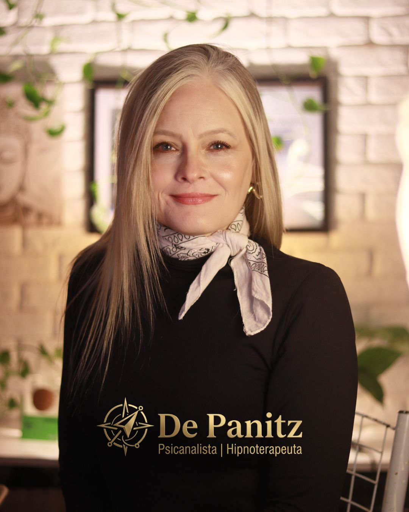

Deise Panitz
Psicanalista & Hipnoterapeuta

Deise Panitz conduz atendimentos com foco em investigação emocional profunda, compreensão de padrões inconscientes e processos terapêuticos voltados à reconstrução interna. Sua abordagem integra psicanálise e hipnoterapia clínica com seriedade, discrição e direcionamento individualizado.
O objetivo não é oferecer respostas prontas, mas ajudar você a compreender o que sustenta bloqueios, repetições e dores emocionais para construir mudanças mais consistentes.
A hipnoterapia clínica pode auxiliar no acesso a padrões profundos de percepção, resposta emocional e memória, permitindo um trabalho terapêutico mais estratégico para questões como ansiedade, autossabotagem, insegurança, compulsões emocionais e bloqueios persistentes.
Aliada à escuta psicanalítica, a proposta não é motivação vazia — é investigação séria, reestruturação interna e clareza emocional.
Para pessoas que percebem que, apesar de entenderem racionalmente seus desafios, continuam presas a padrões emocionais repetitivos — ansiedade, insegurança, relações desgastantes, autossabotagem, medo, compulsões ou bloqueios que parecem mais profundos do que simples força de vontade consegue resolver.
Cada processo é conduzido com estratégia clínica, escuta aprofundada e técnicas voltadas à identificação de padrões emocionais que permanecem ativos mesmo quando você tenta seguir em frente. O trabalho une compreensão consciente e acesso a respostas mais profundas, permitindo reorganização emocional com mais precisão.
Reduzir ciclos de autossabotagem, aliviar cargas emocionais persistentes, fortalecer sua percepção interna e criar mudanças reais na forma como você sente, reage e se posiciona diante da própria vida.
Ansiedade, autossabotagem, insegurança, relações frustrantes ou bloqueios persistentes raramente surgem do nada. O primeiro passo é compreender o padrão emocional real por trás do sintoma.
Quando necessário, a hipnoterapia clínica pode facilitar acesso mais estratégico a respostas emocionais profundas, ajudando a trabalhar o que permanece ativo além da análise superficial.
O objetivo não é apenas aliviar sintomas — é reduzir repetições, fortalecer autonomia emocional e criar mudanças consistentes na forma como você sente, escolhe e se posiciona.
Não. Hipnoterapia clínica séria não retira sua consciência nem sua autonomia. O processo trabalha foco, acesso emocional e investigação terapêutica com segurança e direcionamento clínico.
Sim. Quando conduzido com técnica e estrutura adequada, o atendimento online pode oferecer profundidade, privacidade e resultados consistentes.
Não. Hipnoterapia clínica não depende de ingenuidade ou perda de autonomia. O processo depende de condução técnica, segurança e abertura para investigação emocional estruturada.